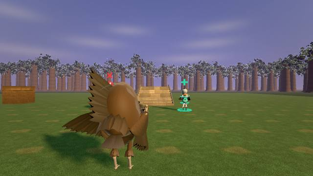
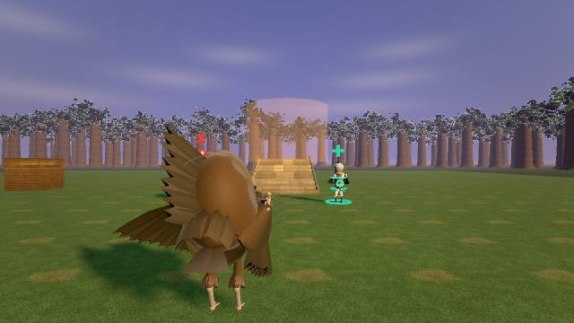
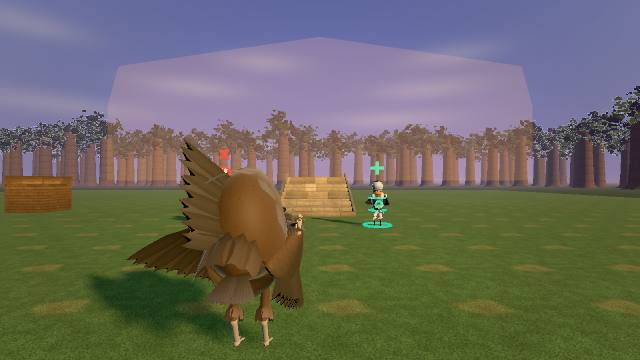

Vulture Playable
Area control · Playable since Stage 4
Appearance: hunched, head held low and forward on a long bare neck; bald red-pink head; a white fluffy ruff around the base of the neck like a collar; huge broad wings hanging like a ragged coat. Dark brown and black. Reads as "hunchback in a coat with a bald head".
How to play
Area-control birds change where the enemy can stand. Place traps and zones on the routes your enemies must take, and make them choose between walking into them and giving ground.
Vulture fights with the Bone Shot, which hits instantly. Damage drops off between 18 m and 38 m, and head hits are beak shots worth ×1.65. Every level above 1 is a Molt: +36 max HP per level; +3% gun damage of base per level; +1 Song power per level; +3 melee damage per level.
Drop Carrion Circle on a choke point and pick the bones of anyone who stumbles out of it. Thermal lifts an ally over a wall or out of trouble. Cast Death Spiral over a clump of enemies and fight on its rim.
Abilities
Four abilities. Slots 1 to 3 unlock at level 1, the ultimate at level 6. Each can be upgraded three times, for 1, 2, 5 AP, in order; see Ability Points. The shortest cooldown in the kit is Pick the Bones at 12 s.

1. Carrion Circle
After 1 s, vultures circle a 6 m area for 7 s: enemies inside take 20 + 0.2 x SP Song damage a second and have 30% heal reduction.
- Tier 1 · 1 AP+2 m radius (8 m) radius +2
- Tier 2 · 2 APHeal reduction 50% reduction +0.2
- Tier 3 · 5 APEnemies below 50% HP inside take double damage finish +0.5
2. Pick the Bones
A 60-degree cone, 8 m long: enemies take 50 + 0.5 x SP Song damage and lose 12% Talon resist for 6 s. You heal for 50% of the damage dealt.
- Tier 1 · 1 AP+25 damage (75 + 0.5 x SP) damage +25
- Tier 2 · 2 APShred 18% shred +0.06
- Tier 3 · 5 AP2 charges +1 charge

3. Thermal
A rising column, 3 m wide, for 6 s. An allied hero who enters it is lifted 10 m and can glide for 3 s (9 m/s across, falling 2 m/s).
- Tier 1 · 1 AP+3 s duration (9 s) duration +3
- Tier 2 · 2 AP-6 s cooldown cooldown -6 s
- Tier 3 · 5 APAllies leaving the column get +20% damage for 4 s

4. Death Spiral
A vortex, 12 m wide, for 5 s: enemies inside are pulled toward the centre at 3 m/s, grounded, and take 40 + 0.5 x SP Song damage a second.
- Tier 1 · 1 AP+2 s duration (7 s) duration +2
- Tier 2 · 2 APPull 5 m/s pull +1
- Tier 3 · 5 APWhen it ends, a 5 m burst at the centre deals 150 + 1.2 x SP Song damage
Since Stage 4. See all heroes.